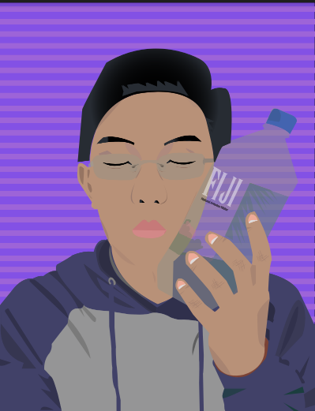
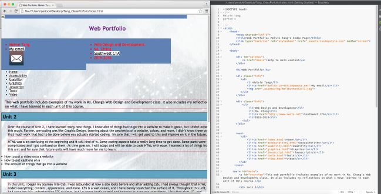

This portfolio is a collection of some of my best work from my time at Southwest CTA. Each piece took hours of meticulious work and dedication.
Freshman Year
Hero's Journey Visual, May-June 2015.
Explanation: This visual was a part of our final PBL in English freshman year. We had to track the journey of one of the heroes from a Greek myth. The project spanned several aspects, like a video, a physical visual representation, a presentation, and more.
Reflection: Looking back on it, I don't think I could have changed anything. It was truly flawless, perfect in every sense. Those hours of work poured into paid off as it earned me and my group a perfect score. Although it was a grueling process, it was actually pretty fun. I'd do it all again if I had the same group members.
Excel Spreadsheet Creations, April 2015.
Explanation: This assignment was for my Business Software Applications class freshman year. The assignment was to use algorithims in Excel spreadsheets to create an interactive graphic. In my case, I made an interactive graphic that would show a Pokemon's evolution as you click on the green button.
Reflection: I definitively could have improved on it. Parts of it didn't function properly and it just looked poorly overall. At the time, I didn't really understand Excel spreadsheets. I thought the process was long, redundant, and unecessary. I still think some parts of the assignment are unecessary. However, if I were to redo this assignment today, I would definitely do better on it.
Debate Research Organization (A.R.E), March 2015.
Explanation: This assignment was for my English class freshman year. This was a way to organize all the research me and my partner had gathered for my debate on Nuclear Weapons into a neat, concise order. Anybody who examined it would be able to quickly garner an idea of the topic, stance, and supporting details.
Reflection: It was as simple as can be. There were no mistakes in the work and everything was made as straight-forward as possible. There was nothing I could really change about it. An organization of notes should be should be concise and straight-forward. Pack as much information as you can with the least amount of words.
Book Jacket, February 2015.
Explanation: This assignment was for my English class freshman year. Our assignment was to find a book and analyze the cover/opening summary of the book to see if influenced our decision to read it or not. If it did, provide constructive criticism as to where they could change it to entice the reader to read the book.
Reflection: The assignment seemed tedious at the time. Looking back, I wish my assignments were that easy now. If I had to do this assignment again, I'd pick different books. All the books I used in the assignment I had read before, giving me prior knowledge and thus a slight adventage when doing the assignment.
Allele Frequency Project, February 2015.
Explanation: This assignment was for my Biology class freshman year. Our assignment was to conduct research and survey the school population for a certain genetic trait. Our chosen genetic trait was whether people clasped their right hand over their left or vice versa.
Reflection: I'd say the experiment and survey was a success, with the data proving our hypothesis correct. Doing the experiment again with a larger survey group will certainly help with the data. Following the directions, we were able to achieve our desired results. I don't see why I would do this again unless there were extra variables added.
Self Portrait, December-January 2015.

Explanation: This assignment was for my Graphic design class. We were to create a self-portrait of ourselves using Adobe Illustrator. This served as our primary lesson and application of the use of the pen tool.
Reflection: Looking back, I really don't like how it looks and I personally think that I could make a better one now as I have more skills. It took about a month to make this first one and at the time, I was proud of my work because I was sadly assigned to the computer that kept crashing.
Sophomore Year
Night - Song Comparison Essay, April 2016.
Explanation: This essay was for my sophomore year English class. We were going over the topic of the Holocaust through reading the book "Night", by Elie Wiesel. Within the book, they are various themes and our assignment was to find a song that correlates with one of the themes contained in the book.
Reflection: I feel that this assignment was a success and I achieved my desired goal. If I had to do this again, I'd pick a different theme from the book and a different song to correlate with said different theme. However, many of themes that come from the book have negative connotations. Thus, sad/negative songs have a greater chance of being associated with the sad themes.
First Web Portfolio, Fall 2015.

Explanation: This was the beginning of my coding experience at Southwest CTA. We began coding our first portfolios in the Fall of 2015 under the guidance of Ms. Chang. It was a basic portfolio that outlined what we did in our unit lessons.
Reflection: I cringe looking back at this screenshot and realize how far I've come since those days. My skills have exponentionally grown so much since then. If I had my current skills back then I would be able to create a superior site. In the past, I didn't really understand coding, but I understand it a little bit more now.